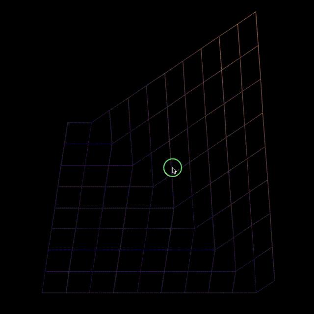
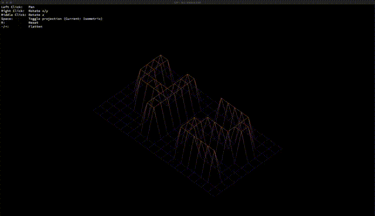
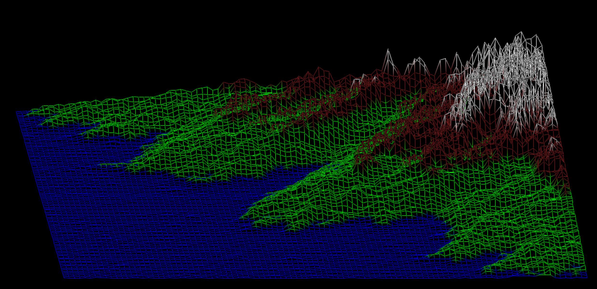

FdF
Descripción
El proyecto FdF de la Escuela 42 es un visor gráfico de mapas en 3D que utiliza la biblioteca gráfica de la escuela, como mlx. El programa lee datos de un archivo que contiene información sobre la altura de los puntos de un mapa y crea una representación visual en 3D utilizando líneas que conectan estos puntos.
Objetivos
- Interfaz gráfica:
· Crear una interfaz gráfica utilizando la biblioteca gráfica de la escuela (mlx). - Lectura de datos:
· Leer un archivo de datos para obtener información sobre la altura de los puntos del mapa. - Proyecciones:
· Implementar al menos dos proyecciones (isométrica y ortográfica) para visualizar el mapa en 3D. - Colores:
· Asignar colores a las líneas según la altura de los puntos para mejorar la legibilidad visual. - Controles de usuario:
· Permitir la interacción del usuario, como ajustar la altura o rotar los puntos.


